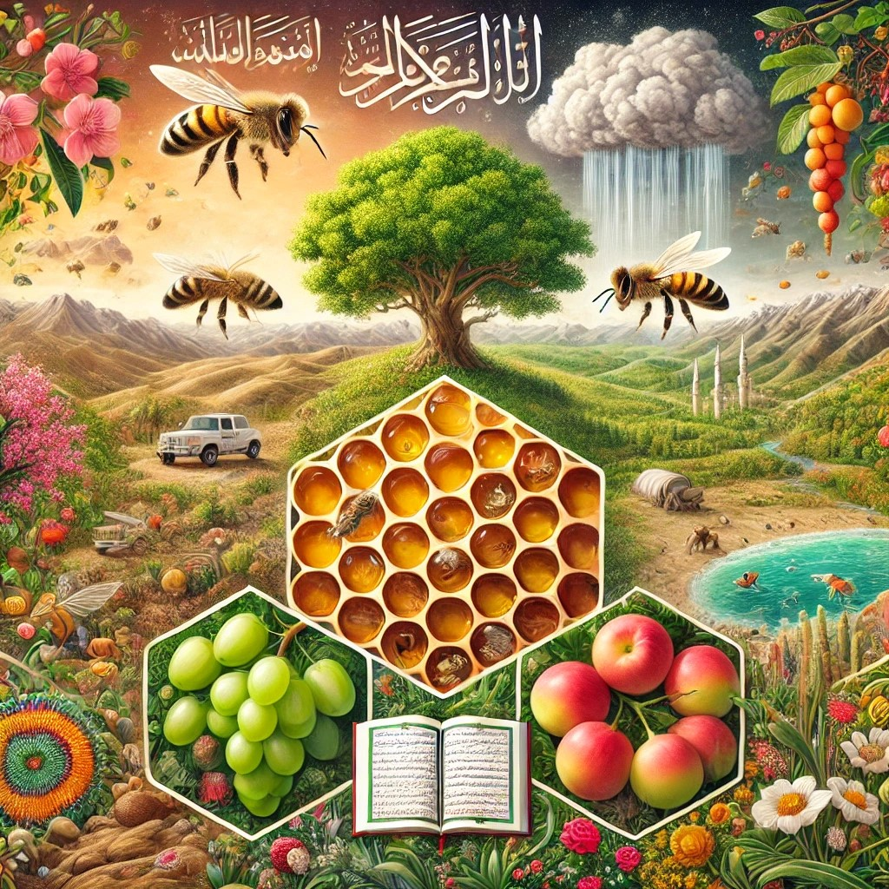
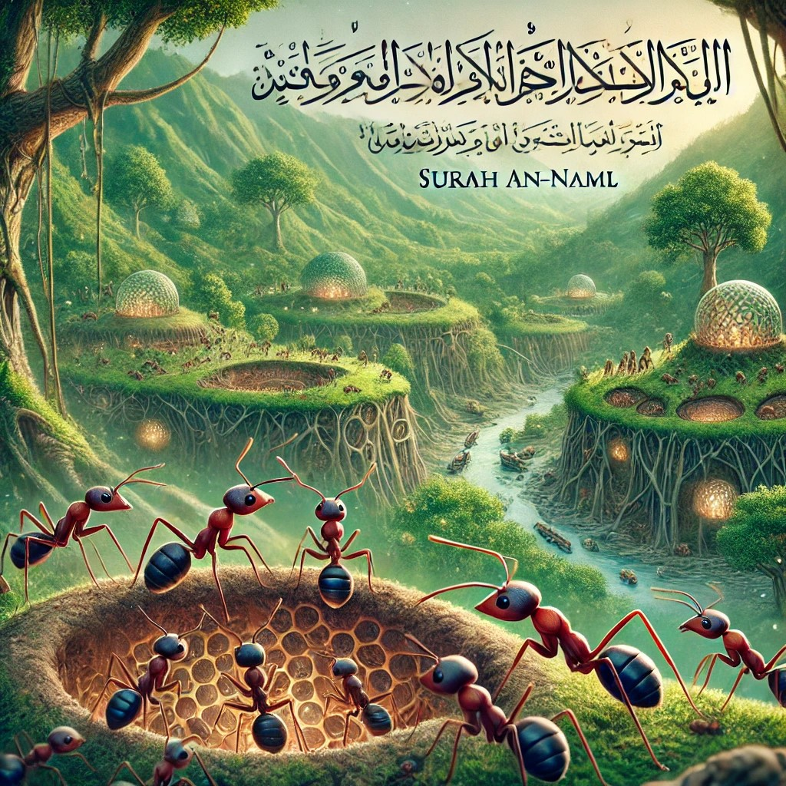

تشير هذه الآية إلى أن الماء هو أصل الحياة، وهو ما
أثبته العلم الحديث؛ فالماء يعتبر ضرورياً للعمليات الحيوية في جميع
الكائنات الحية، بل إن الحياة لا يمكن أن توجد بدون الماء، حيث يمثل نسبة
كبيرة من تركيب الخلايا الحية.
الظاهرة العلمية:
أهمية الماء للحياة: الماء هو المكون الأساسي في الخلايا الحية، ويشكل حوالي 70% من جسم الإنسان. جميع العمليات البيولوجية الأساسية تعتمد على الماء، مثل التفاعلات الكيميائية داخل الخلايا، ونقل المواد الغذائية، وإزالة الفضلات.
دور الماء في نشأة الحياة: تشير النظريات العلمية إلى أن الحياة بدأت في المحيطات، حيث وفر الماء البيئة المناسبة للتفاعلات الكيميائية التي أدت إلى تكوين الجزيئات العضوية المعقدة.
المراجعالعلمية:
"Biology" للمؤلف نيل
كامبل، الذي يشرح دور الماء في العمليات الحيوية وأهميته للحياة.
دراسات في علم الأحياء: توضح كيف أن الماء يعتبر وسطًا أساسيًا للتفاعلات الكيميائية الحيوية التي تدعم الحياة.
المراجعالقرآنيةوالتفسيرية
كتب التفسير:
تفسير ابن كثير: يوضح أن هذه الآية تشير إلى قدرة الله في خلق الحياة من الماء، ويشير إلى أن الماء هو عنصر أساسي في تكوين الكائنات الحية.
تفسير الطبري: يقدم تفسيرًا يركز على أهمية الماء في الحياة وكيف أن الله جعل منه كل شيء حي.
كتبالإعجازالعلمي:
"الإعجاز العلمي في القرآن والسنة" للدكتور زغلول النجار: يناقش هذا الكتاب الإشارات العلمية في القرآن، بما في ذلك دور الماء في نشأة الحياة، ويقدم تفسيرًا علميًا لهذه الظاهرة.
الخلاصة
تُظهر هذه الآية كيف أن القرآن الكريم أشار إلى حقيقة علمية مهمة، وهي أن الماء هو أساس الحياة. هذه الحقيقة، التي تم تأكيدها من خلال الدراسات العلمية الحديثة، تُظهر الدقة في وصف القرآن للظواهر الطبيعية.
. 2التنوع في خلق الكائنات الحية
يُعتبر التنوع البيولوجي من المعجزات الإلهية في خلق
الكائنات الحية، حيث خلق الله مختلف الأنواع التي تتكيف مع بيئاتها وتؤدي
أدواراً فريدة في النظام البيئي. القرآن أشار إلى هذا التنوع في عدة آيات،
مؤكداً على قدرة الله في خلق أشكال وألوان ووظائف متعددة من
الكائنات.
التفسير: توضح هذه الآية أن هناك تنوعًا في الألوان والأشكال بين الكائنات الحية، مما يعكس قدرة الله وحكمته في الخلق.
الظاهرة العلمية:
التنوع البيولوجي: يشير إلى التنوع الكبير في الأنواع الحية على الأرض، بما في ذلك التنوع الجيني، وتنوع الأنواع، وتنوع النظم البيئية. هذا التنوع هو نتيجة لعمليات تطورية طويلة الأمد.
التكيف والتطور: الكائنات الحية تتكيف مع بيئاتها المختلفة، مما يؤدي إلى تنوع في الأشكال والوظائف. هذا التنوع يساعد في بقاء الأنواع واستمرارها.
المراجعالعلمية:
"The Diversity of Life" للمؤلف إدوارد ويلسون، الذي يشرح أهمية التنوع البيولوجي ودوره في استدامة الحياة على الأرض.
دراسات في علم الأحياء التطوري: توضح كيف أن التنوع في الكائنات الحية هو نتيجة لعمليات تطورية معقدة تشمل الانتقاء الطبيعي والتكيف.
المراجعالقرآنيةوالتفسيرية
كتب التفسير:
تفسير ابن كثير: يوضح أن هذه الآيات تشير إلى قدرة الله في خلق الكائنات الحية بطرق متنوعة، ويشير إلى الحكمة الإلهية في هذا التنوع.
تفسير الطبري: يقدم تفسيرًا يركز على التنوع في الخلق كدليل على عظمة الخالق وقدرته.
كتب الإعجاز العلمي:
"الإعجاز العلمي في القرآن والسنة" للدكتور زغلول النجار: يناقش هذا الكتاب الإشارات العلمية في القرآن، بما في ذلك التنوع في خلق الكائنات الحية، ويقدم تفسيرًا علميًا لهذه الظاهرة.
الخلاصة
تُظهر هذه الآيات كيف أن القرآن الكريم أشار إلى حقيقة علمية مهمة، وهي التنوع الكبير في خلق الكائنات الحية. هذا التنوع، الذي تم تأكيده من خلال الدراسات العلمية الحديثة، يُظهر الدقة في وصف القرآن للظواهر الطبيعية.
.3الإعجاز العلمي في الناصية
الإعجاز العلمي في قوله تعالى
":كَلَّا لَئِنْ لَمْ يَنْتَهِ لَنَسْفَعًا
بِالنَّاصِيَةِ * نَاصِيَةٍ كَاذِبَةٍ خَاطِئَةٍ" (سورة
العلق: 15-16) يكمن في الإشارة إلى الناصية (مقدمة الرأس) ودورها في السلوك
البشري، وهو ما اكتشفه العلم الحديث. دعني أوضح ذلك بالتفصيل:
المعنى اللغوي:
الناصية: هي مقدمة الرأس أو الجبهة.
قال المفسرون إن ذكر الناصية في الآية يشير إلى
موضع التحكم في الكذب والخطأ، وهو ما كان يُفهم مجازيًا في زمن نزول
القرآن.
المراجع:
تفسير الطبري: الناصية هي مقدمة الرأس، وذكرها في الآية يدل على الإذلال
والإهانة.
تفسير ابن كثير: الناصية الكاذبة الخاطئة تعبير عن الشخص الذي يكذب ويرتكب
الأخطاء.
الإعجاز العلمي:
العلم الحديث أثبت أن الناصية (مقدمة
الرأس)، أو ما يُعرف بالفص الجبهي Frontal ) (Lobe في الدماغ، هي المنطقة المسؤولة عن:
اتخاذ القرارات.
التخطيط.
السلوك
الاجتماعي.
التحكم في الكذب
والخطأ.
الدليل العلمي:
الدراسات في علم الأعصاب (Neuroscience)
أظهرت أن الفص الجبهي هو المسؤول عن السلوكيات الأخلاقية،
بما في ذلك الصدق والكذب.
عند حدوث إصابة في هذه المنطقة، يتأثر سلوك الإنسان
وقدرته على اتخاذ القرارات الصحيحة.
المراجع العلمية:
كتاب: "Principles of Neural
Science" (Eric Kandel, 2013).
دراسة: "The Role of the Frontal
Lobe in Decision Making" (Journal of Cognitive Neuroscience,
2001).
العلاقة بين النص القرآني والعلم
الحديث:
وصف الناصية بأنها "كاذبة خاطئة" يتوافق مع دور
الفص الجبهي في التحكم بالسلوكيات الخاطئة والكذب.
الإشارة إلى الناصية في القرآن قبل أكثر من 1400
عام يُعد إعجازًا علميًا، حيث لم يكن أحد يعلم دور هذه المنطقة من الدماغ في
ذلك الوقت.
4. الإعجاز العلمي في الفرث والدم
القرآن الكريم أشار في آية عظيمة إلى عملية معقدة داخل
أجسام الكائنات الحية تتعلق بتكوين الحليب، وهي عملية لم تُفهم بشكل علمي
دقيق إلا في العصور الحديثة.
الفرث: هو
ما يُستخلص من الطعام في الجهاز الهضمي للحيوان (المعدة والأمعاء)، وهو
بقايا الطعام شبه المهضوم.
الدم: هو
السائل الحيوي الذي ينقل المغذيات من الجهاز الهضمي إلى مختلف أعضاء الجسم،
ومنها الغدد اللبنية.
الإشارة العلمية:
اللبن يتشكل من خلال عملية معقدة تحدث بين الفرث
والدم.
اللبن الناتج يكون "خالِصًا"، أي خالٍ من أي شوائب أو
مكونات ضارة، على الرغم من أنه يتكون من مواد توجد في الأصل في الدم
والفرث.
.2 الإعجاز العلمي
.1عملية تكوين اللبن
علميًا
المراحل العلمية لتكوين
اللبن:
الهضم وامتصاص المغذيات
(الفرث):
الطعام الذي تتناوله الأنعام يتم هضمه في المعدة
والأمعاء لتكوين الفرث.
العناصر الغذائية القابلة للامتصاص مثل الجلوكوز،
الأحماض الأمينية، والدهون تُنقل إلى مجرى الدم.
دور الدم:
الدم يعمل كوسيط ينقل المغذيات المهضومة من الجهاز
الهضمي إلى مختلف أعضاء الجسم، بما في ذلك الغدد اللبنية.
إنتاج اللبن:
الغدد اللبنية تقوم بتصفية العناصر المفيدة من الدم
وتحويلها إلى مكونات اللبن (البروتين، الدهون، اللاكتوز،
والمعادن).
حقائق علمية:
العلماء أكدوا أن الحليب يتم إنتاجه من مواد موجودة
في الدم الذي يحمل المغذيات المهضومة من الفرث، تمامًا كما وصفته
الآية.
.2اللبن "خالِصًا":
على الرغم من أن اللبن يتكون من مواد قادمة من الدم
والفرث، إلا أنه:
خالٍ من السموم والفضلات التي تكون
في الفرث.
نقي ومغذي بفضل العمليات الحيوية
المعقدة التي تحدث في الغدد اللبنية.
الدليل العلمي:
عملية إنتاج اللبن تشمل:
تصفية الشوائب والفضلات.
تركيز العناصر الغذائية اللازمة فقط لإنتاج حليب
نظيف وآمن.
المراجع:
Principles of Dairy Science, Schmidt et al.,
2020.
دراسة في مجلة Journal of Dairy
Research: عن تكوين الحليب ودور الدم في نقل
المغذيات.
دلالة الإعجاز
التوافق مع العلم
الحديث:
وصف القرآن الكريم بدقة العملية الحيوية التي تشمل
تحويل الفرث والدم إلى لبن.
هذا التوصيف يتفق مع الاكتشافات العلمية التي لم
تكن معروفة وقت نزول القرآن.
البلاغة العلمية:
اختيار كلمات "من بين فرث ودم" يعكس الترتيب العلمي
الدقيق للعملية.
المراجع:
Tropical Animal Health and Production: مقال عن فسيولوجيا إنتاج اللبن.
كتاب: The Biology of Lactation,
Jenness et al.
مقارنة مع الاكتشاف العلمي
الحديث
ما قبل الاكتشاف العلمي:
كان يُعتقد أن اللبن يتكون مباشرة من الطعام في
المعدة، دون معرفة بدور الدم أو العمليات الحيوية المعقدة.
الاكتشاف العلمي الحديث:
في القرن العشرين، أكدت الأبحاث أن:
اللبن يتشكل من العناصر الغذائية الموجودة في الدم
والتي أصلها من عملية الهضم.
الغدد اللبنية تقوم بدور رئيسي في تنقية العناصر
وتحويلها إلى مكونات الحليب.
المراجع:
كتاب: Physiology of Domestic
Animals, Sjaastad et al.
دراسة منشورة في Journal of Animal
Science: مراحل إنتاج اللبن.
Journal of Dairy Research.
الخلاصة
أشار القرآن الكريم في آية واحدة إلى عملية علمية
دقيقة تشمل:
دور الفرث (الهضم) والدم في إنتاج
اللبن.
نقاء اللبن الناتج عن تصفية الشوائب في الغدد
اللبنية.
هذا التوافق بين النص القرآني والعلم الحديث يُظهر
بوضوح الإعجاز العلمي.
.5الإعجاز العلمي في يوم تشهد عليهم
السنتهم
الإعجاز العلمي في قوله
تعالى": يَوْمَ تَشْهَدُ عَلَيْهِمْ
أَلْسِنَتُهُمْ وَأَيْدِيهِمْ وَأَرْجُلُهُمْ بِمَا كَانُوا يَعْمَلُونَ" (سورة النور: 24) يتجلى في الإشارة إلى قدرة الأعضاء على تسجيل
وحفظ المعلومات، وهو ما أثبته العلم الحديث من خلال فهمنا للذاكرة
البيولوجية، البصمات الصوتية، والأنماط الفريدة لكل إنسان. دعنا نوضح ذلك
بالتفصيل:
المعنى التفسيري للآية:
الآية تتحدث عن يوم القيامة، حيث تشهد الألسنة
والأيدي والأرجل على أفعال الإنسان.
المفسرون القدامى أشاروا إلى أن هذه الشهادة تكون
بأمر الله، حيث يجعل الأعضاء تنطق بما فعل الإنسان.
قال ابن كثير: "تشهد
عليهم جوارحهم بما عملوا من خير وشر."
قال الطبري: "تشهد
عليهم أعضاؤهم بما كانوا يعملون في الدنيا."
المراجع:
تفسير ابن كثير.
تفسير الطبري.
تفسير القرطبي.
الإعجاز العلمي في
الآية:
أ. شهادة الألسنة (البصمة
الصوتية):
الحقائق العلمية:
لكل إنسان بصمة صوتية فريدة، تعتمد على:
شكل اللسان.
حجم تجويف الفم.
طريقة النطق.
هذه البصمة الصوتية تُستخدم في التعرف على الأشخاص
في الطب الشرعي والأمن.
الدليل العلمي:
العلم الحديث أثبت أن الصوت يمكن تسجيله وتحليله
بدقة، مما يجعل اللسان "شاهداً" على صاحبه.
تقنيات التعرف على الصوت تعتمد على الخصائص الفريدة
لكل إنسان.
ب. شهادة الأيدي
(البصمات):
الحقائق العلمية:
بصمات الأصابع فريدة لكل إنسان، ولا تتكرر حتى بين
التوائم.
تُستخدم البصمات في التعرف على الهوية منذ أكثر من
قرن.
الأيدي تحمل سجلاً دقيقاً للأفعال من خلال آثار
البصمات.
الدليل العلمي:
العلم أثبت أن بصمات الأصابع لا تتغير طوال حياة
الإنسان.
يمكن استخدام البصمات لتحديد الأشخاص
بدقة.
ج. شهادة الأرجل (أنماط
المشي):
الحقائق العلمية:
لكل إنسان نمط مشي فريد يعتمد على:
طول الساق.
طريقة توزيع الوزن.
حركة العضلات.
يمكن التعرف على الأشخاص من خلال تحليل أنماط
المشي.
الدليل العلمي:
تقنيات التعرف على المشي تُستخدم في الأمن
والمراقبة.
الأرجل تحمل آثاراً مميزة يمكن
تتبعها.
العلاقة بين النص القرآني والعلم
الحديث:
أ. حفظ المعلومات في
الأعضاء:
العلم الحديث أثبت أن الأعضاء تحمل سجلاً دقيقاً
للأفعال:
الصوت يمكن تسجيله وتحليله.
البصمات تُستخدم للتعرف على الهوية.
أنماط المشي تُظهر هوية الشخص.
ب. توافق النص مع العلم:
الآية تشير إلى أن الأعضاء تشهد على أفعال
الإنسان.
العلم أثبت أن الأعضاء تحمل معلومات فريدة يمكن
استخدامها كشهادة.
.التطبيقات العلمية
الحديثة:
أ. في مجال الأمن:
التعرف على الأشخاص من خلال
البصمات.
التعرف على الأشخاص من خلال الصوت.
التعرف على الأشخاص من خلال أنماط
المشي.
ب. في مجال الطب:
دراسة الصوت لتشخيص الأمراض.
تحليل أنماط المشي لتشخيص مشاكل
الحركة.
استخدام البصمات في الطب الشرعي.
المراجع العلمية:
"Forensic Speaker Recognition" (2012): دراسة عن التعرف على الأشخاص من خلال الصوت.
"Fingerprint Analysis in Forensics": دراسة عن استخدام البصمات في الطب الشرعي.
"Gait Recognition Studies": دراسة عن التعرف على الأشخاص من خلال أنماط
المشي.
وجه الإعجاز:
الإشارة إلى شهادة الألسنة والأيدي والأرجل تتوافق
مع الحقائق العلمية الحديثة.
سبق القرآن الكريم العلم الحديث في الإشارة إلى أن
الأعضاء تحمل سجلاً دقيقاً للأفعال.
هذا التوافق بين النص القرآني والعلم الحديث يُعد من
أوجه الإعجاز العلمي.
الخلاصة:
الإعجاز العلمي في الآية يتجلى في:
الإشارة إلى البصمة الصوتية
للألسنة.
الإشارة إلى بصمات الأيدي.
الإشارة إلى أنماط المشي للأرجل.
توافق هذه الإشارات مع الاكتشافات العلمية
الحديثة.
.6الإعجاز العلمي في تكوّن النبات
القرآن الكريم أشار إلى حقائق علمية مذهلة حول تكوّن
النباتات ونموها، والتي لم تُكتشف تفاصيلها الدقيقة إلا بعد التقدم العلمي
الحديث. هذه الإشارات القرآنية تؤكد توافق النص القرآني مع الحقائق
العلمية.
وصف دقيق لعملية إحياء الأرض الجافة بالماء، مما
يحفز نمو النباتات.
الإشارة العلمية في القرآن حول دور
الماء
الماء كمصدر أساسي للحياة
والنبات
النباتات تعتمد على الماء لنقل المغذيات داخل
أنسجتها وتفعيل عمليات التمثيل الضوئي.
الماء يعمل كوسيط لتفاعل الإنزيمات داخل الخلايا
النباتية.
الدليل العلمي:
اكتشف العلماء أن خلايا النبات تحتوي على أكثر من
80% ماء، وهو عنصر أساسي لجميع العمليات الحيوية.
المراجع:
كتاب: Plant Physiology, Taiz
& Zeiger.
مقال في Nature Education: دور الماء في نمو النبات.
الأزواج في النبات
الإشارة القرآنية:
استخدام كلمة "أزواج" يشير إلى وجود الذكر والأنثى
في النباتات.
الاكتشاف العلمي الحديث:
معظم النباتات تحتوي على أعضاء ذكرية (الأسدية)
وأخرى أنثوية (المتاع) للتكاثر.
بعض النباتات تعتمد على التلقيح المتقاطع بين الذكر
والأنثى لإنتاج البذور.
المراجع:
دراسة منشورة في Journal of
Botany عن التكاثر الجنسي في
النباتات.
كتاب: Reproductive Biology of
Plants, Bhojwani et al.
مراحل نمو النبات كما أشار إليها
القرآن
الإشارة القرآنية:
قال الله
تعالى ":وَهُوَ الَّذِي أَنْزَلَ مِنَ
السَّمَاءِ مَاءً فَأَخْرَجْنَا بِهِ نَبَاتَ كُلِّ شَيْءٍ فَأَخْرَجْنَا مِنْهُ خَضِرًا نُخْرِجُ مِنْهُ حَبًّا
مُتَرَاكِبًا" ) سورة الأنعام: 99(
تشير الآية إلى المراحل المتسلسلة لنمو
النبات:
بداية الإنبات (الخضر).
الإزهار وإنتاج الحبوب.
الدليل العلمي:
مراحل نمو النبات تبدأ بامتصاص الماء، يليها
الإنبات، ثم الإزهار وإنتاج الثمار.
المراجع:
Plant Growth and Development, Leopold et al.
دراسة في مجلة Plant Biology عن مراحل نمو النباتات.
ظاهرة اهتزاز الأرض ونمو
النبات
الإشارة القرآنية:
قال الله تعالى": فَإِذَا أَنْزَلْنَا عَلَيْهَا الْمَاءَ اهْتَزَّتْ
وَرَبَتْ)"سورة الحج: 5(
تشير الآية إلى حركة التربة أثناء امتصاص الماء
وبداية النمو.
الاكتشاف العلمي الحديث:
التربة الجافة عندما تمتص الماء تتمدد وتهتز بسبب
النشاط الميكروبي وزيادة حجم الجذور.
المراجع:
مقال في Journal of Soil Science:
تأثير الماء على حركة التربة.
كتاب: Soil Microbiology,
Alexander.
الإنبات كعملية إعجازية
الإشارة القرآنية:
وصف القرآن عملية الإنبات بأنها عملية منظمة
وموجهة، تبدأ بالبذرة التي تحتوي على جميع المعلومات الوراثية اللازمة
للنمو.
الدليل العلمي:
البذور تحتوي على جنين نباتي ومخزون غذائي محاط
بطبقة واقية، وكل ذلك يضمن بداية حياة النبات عند توفر الظروف المناسبة
(الماء والحرارة).
المراجع:
دراسة في مجلة Seed Science
Research.
كتاب: Principles of Plant
Science, Hopkins.
الخلاصة
الإعجاز العلمي:
أشار القرآن الكريم إلى أهمية الماء في تكوين
النباتات ونموها.
كشف عن وجود "الأزواج" في النباتات، وهو ما أثبته
العلم الحديث.
وصف القرآن بدقة مراحل نمو النبات وارتباطها
بالماء، كما بيّن حركة التربة أثناء الإنبات.
المراجع:
كتب ومراجع علمية:
Plant Physiology, Taiz & Zeiger.
Reproductive Biology of Plants, Bhojwani et al.
Soil Microbiology, Alexander.
مقالات علمية:
"Water and Plant Growth", Nature Education.
"Impact of Soil Moisture on Plant Germination", Journal of
Soil Science.
"Reproductive Strategies in Plants", Journal of
Botany.
. 7النحل وإنتاج العسل

يُعتبر النحل وإنتاجه للعسل من الموضوعات التي ذُكرت في
القرآن الكريم بشكل لافت، حيث يعكس ذلك مظاهر متعددة من الإعجاز العلمي
الذي يتجلى في نصوص القرآن. تأتي هذه الإشارات لتبين دقة الوصف والمعرفة
التي سبقت الاكتشافات العلمية الحديثة.
النحل يبني خلاياه في الأماكن الطبيعية كالكهوف
والأشجار، وكذلك في الهياكل التي يصنعها الإنسان (مما
يعرشون).
هذا يعكس فهمًا لطبيعة النحل التكيفية وقدرته على
الاستفادة من البيئات المختلفة.
جمع الرحيق من كل الثمرات:
"كُلِي مِنْ كُلِّ الثَّمَرَاتِ":
النحل يجمع الرحيق وحبوب اللقاح من مجموعة متنوعة
من النباتات.
هذا التنوع يؤدي إلى إنتاج عسل مختلف الألوان
والنكهات والفوائد، اعتمادًا على مصدر الرحيق.
اتباع طرق محددة بتسهيل إلهي:
"فَاسْلُكِي سُبُلَ رَبِّكِ
ذُلُلًا":
النحل يتبع مسارات محددة ومنظمة عند البحث عن
الغذاء والعودة إلى الخلية.
الدراسات العلمية أظهرت أن النحل يستخدم نظامًا
متقدمًا للتنقل والتواصل، مثل رقصة النحل التي تنقل من خلالها المعلومات عن
مواقع الأزهار.
فوائد العسل الصحية:
"فِيهِ شِفَاءٌ لِّلنَّاسِ":
العسل معروف بخصائصه العلاجية، ويحتوي على مضادات
بكتيرية ومضادات أكسدة.
يُستخدم في علاج الجروح، التهابات الحلق، مشكلات
الجهاز الهضمي، وغيرها.
الأبحاث الحديثة تدعم الفوائد الصحية للعسل وتكتشف
المزيد من خصائصه العلاجية.
مختلف ألوان العسل:
"شَرَابٌ مُّخْتَلِفٌ أَلْوَانُهُ":
ألوان العسل تختلف بناءً على مصدر الرحيق والنباتات
التي يجمع منها النحل.
هذا التنوع في الألوان يعكس التنوع في التركيب
والفوائد.
استنتاج:
تُظهر الآيات القرآنية المتعلقة بالنحل دقة علمية في وصف
سلوك النحل ووظائفه وفوائد إنتاجه. هذه المعلومات لم تكن معروفة بشكل دقيق
في زمن النبي محمد ﷺ، مما يدفع الكثيرين إلى اعتبار ذلك إعجازًا علميًا في
القرآن الكريم.
مراجع ومصادر إضافية:
الكتب:
"النحل والإعجاز العلمي في القرآن" للدكتور [اسم
المؤلف].
"معجزة القرآن العلمية" للدكتور زغلول
النجار.
الأبحاث العلمية:
دراسات حول سلوك النحل ونظام التواصل
بينها.
أبحاث حول الخصائص العلاجية للعسل وفوائده
الصحية.
المواقع الإلكترونية:
الموقع الرسمي لـ جامعة النحل
الدولية.
مقالات علمية منشورة في مجلات مختصة بعلم الحشرات
والغذاء.
الإعجاز العلمي في النمل.8

الإعجاز العلمي في القرآن الكريم فيما يخص النمل يُظهر
توافقًا مدهشًا بين ما ورد في النصوص القرآنية : وما
اكتشفه العلم الحديث حول سلوك النمل وتنظيمه. في الآية
النمل يستخدم أنظمة معقدة للتواصل عبر الفيرومونات،
والإشارات الحركية، وحتى الأصوات. الآية تشير إلى تواصل واضح بين النملة
وقومها، وهو أمر أثبته العلم بأن النمل يمكنه إرسال إشارات تحذيرية لتنبيه
باقي المستعمرة عند وجود خطر.
المرجع:
Holldobler, B., & Wilson, E. O. (1990). The Ants. Harvard
University Press.
التنظيم الاجتماعي.2
النمل يعيش في مستعمرات منظمة للغاية، حيث يتم توزيع
الأدوار بدقة بين الأفراد (الملكة، العاملات، الجنود). هذا ينسجم مع وصف
الآية للنمل باعتباره كيانًا جماعيًا يتحرك بشكل منظم للدخول إلى
المساكن.
المرجع:
Gordon, D. M. (1999). Ants at Work: How an Insect Society Is
Organized. Free Press.
مفهوم "التحطيم".3
استخدام كلمة "لَا يَحْطِمَنَّكُمْ" دقيق للغاية، إذ أثبت العلم
أن الهيكل الخارجي للنمل يتكون من مادة الكيتين، وهي مادة صلبة قابلة
للتحطم تحت الضغط.
:المرجع
Chapman, A. D. (2009). Numbers of Living Species in Australia and the
World. Report for Australian Biodiversity Information Services.
.الوعي بالخطر.4
النملة في القصة تظهر درجة من الإدراك بالخطر وبوجود
سليمان وجنوده، وهو ما يوافق الاكتشافات الحديثة حول قدرة النمل على تحليل
البيئة المحيطة واستنتاج المخاطر.
:المرجع
Franks, N. R., & Richardson, T. (2006). "Teaching in
tandem-running ants." Nature.
الخلاصة:
هذه الآية تجمع بين إعجاز علمي يتعلق بسلوك النمل
والتنظيم الاجتماعي له، وبين إعجاز بلاغي في اختيار الكلمات، ما يعزز من
فهمنا العميق لعجائب الكون التي أشار إليها القرآن.
الآية القرآنية من سورة الحج (22:73) التي تتحدث عن
الذباب تقدم تحديًا وتأملًا عميقًا في قدرات الخلق والتفاعلات البيولوجية.
لفهم الإعجاز العلمي في هذه الآية، يمكن الاستعانة بمراجع متعددة تشرح كيف
تعكس هذه الآية معارف علمية متقدمة. إليك تفصيلًا لكل جزء من الآية مع
المراجع المناسبة:
.9عجز البشر عن خلق حياة
الآية القرآنية التي تتحدث عن الذباب في سورة الحج،
الآية 73، تقول: "يَا أَيُّهَا النَّاسُ ضُرِبَ مَثَلٌ فَاسْتَمِعُوا لَهُ ۚ إِنَّ الَّذِينَ
تَدْعُونَ مِن دُونِ اللَّهِ لَن يَخْلُقُوا ذُبَابًا وَلَوِ اجْتَمَعُوا لَهُ ۖ وَإِن يَسْلُبْهُمُ الذُّبَابُ
شَيْئًا لَّا يَسْتَنقِذُوهُ مِنْهُ ۚ ضَعُفَ الطَّالِبُ وَالْمَطْلُوبُ". هذه الآية تحمل
دلالات عميقة وتشير إلى عدة جوانب من الإعجاز العلمي:
.عجز
البشر عن خلق حياة.1
الآية تتحدى البشر وتظهر عجزهم عن خلق حياة، حتى لو
كانت بسيطة مثل الذباب. هذا يشير إلى أن القدرة على خلق الحياة هي من صفات
الخالق وحده. من الناحية العلمية، البشر قد تمكنوا من التعديل الجيني
والهندسة الوراثية، لكن خلق كائن حي من العدم لا يزال خارج الإمكانيات
البشرية.
. تعقيد الكائنات الحية البسيطة.2
الذباب، رغم صغر حجمه، يمتلك تعقيدًا بيولوجيًا هائلًا.
يحتوي على أنظمة للتنفس، الهضم، التكاثر، والحركة، بالإضافة إلى الجهاز
العصبي. هذا التعقيد يعكس الإعجاز في خلقه.
. الذباب والتفاعل مع البيئة.3
الجزء الثاني من الآية يشير إلى أن الذباب قادر على
"سلب" شيء من الأصنام التي لا تستطيع استرداده. هذا يمكن تفسيره على أن
الذباب يمكن أن يحمل ميكروبات أو يتفاعل مع المواد بطرق لا يمكن للبشر
التحكم بها أو استعادة ما أخذه الذباب بسهولة. يظهر هذا التفاعل البيولوجي
والكيميائي المعقد الذي يحدث على مستوى ميكروسكوبي.
. التواضع البشري أمام الطبيعة.4
الآية تعلم البشر التواضع، مشيرة إلى أن الإنسان، مهما
بلغ من تقدم، يظل عاجزًا أمام قوانين الطبيعة والخلق. هذا يعزز فهم الإنسان
لمكانته في الكون ويحثه على الاعتراف بقدرة الخالق.
. التأمل في خلق الله.5
تدعو الآية المؤمنين وغير المؤمنين على حد سواء إلى
التأمل في خلق الله والتفكير في العجز البشري مقارنة بالقدرة الإلهية، مما
يعزز الإيمان بالله ويقوي العلاقة بين الخالق والمخلوق.
هذه الآية تعد مثالاً على كيفية استخدام القرآن للأمثلة
البسيطة من الطبيعة لتوصيل رسائل عميقة ومعقدة تتعلق بالإيمان والعلم
والفلسفة.
"لَن يَخْلُقُوا ذُبَابًا وَلَوِ اجْتَمَعُوا
لَهُ"
المرجع: "الإعجاز العلمي في
القرآن والسنة" بقلم محمد راتب النابلسي. هذا الكتاب يشرح كيف أن القرآن
يعرض تحديات تتعلق بالقدرات البشرية والعلمية، مؤكدًا على أن خلق الحياة هو
من اختصاص الخالق وحده.
تعقيد الكائنات الحية
البسيطة
المرجع: "القرآن والعلم
الحديث" بقلم موريس بوكاي. يناقش بوكاي كيف أن الكائنات الحية، حتى البسيطة
منها مثل الذباب، تحمل تعقيدات بيولوجية تفوق القدرة البشرية على الخلق من
العدم.
المرجع: "معجزة القرآن"
بقلم سيد قطب. يتناول قطب كيف أن الذباب يمكن أن يأخذ مواد من البشر
ويتفاعل معها بطرق لا يمكن استردادها بسهولة، مما يظهر القدرات الفائقة
للكائنات الحية في التفاعل مع بيئتها.
التأمل في خلق الله والتواضع
البشري
مواقع إلكترونية ومؤتمرات
مواقع مثل ejaz.org والمشروع الإسلامي لرصد الأهلة icoproject.org تقدم مواد تعليمية وبحثية حول الإعجاز العلمي في
القرآن.
الاعجاز في خلق الانسان
للتعمق في دراسة الإعجاز العلمي المتعلق بالآية
القرآنية التي تتحدث عن الذباب وعجز البشر عن خلق مثله، يمكن الرجوع إلى
مجموعة من المراجع العلمية والدينية التي تناولت هذا الموضوع بالتفصيل.
إليك بعض المراجع المفيدة:
كتب
"الإعجاز العلمي في القرآن
والسنة" - محمد راتب النابلسي
يتناول هذا الكتاب الإعجاز العلمي في القرآن بشكل
عام، ويمكن أن يحتوي على فصول تتعلق بخلق الذباب والتحديات البيولوجية
المرتبطة به.
"القرآن والعلم الحديث" -
موريس بوكاي
يركز هذا الكتاب على مقارنة النصوص القرآنية
بالاكتشافات العلمية الحديثة، ويمكن أن يشمل تحليلات للآية
المذكورة.
"معجزة القرآن" - سيد قطب
يستعرض هذا الكتاب الجوانب المختلفة للإعجاز في
القرآن، بما في ذلك الإعجاز البيولوجي.
الآية القرآنية من سورة الحج (22:73) التي تتحدث عن عجز
البشر عن خلق ذبابة وعجزهم عن استرداد شيء إذا سلبه الذباب، تعتبر مثالاً
على الإعجاز العلمي في القرآن. هذه الآية تلفت الانتباه إلى دقة وتعقيد
الخلق البيولوجي وتحديات التكنولوجيا البيولوجية. لفهم هذا الإعجاز بشكل
أعمق، يمكن الرجوع إلى عدة مراجع تناولت هذا الموضوع:
الخاتمة
تؤكد الدراسات العلمية الحديثة صحة ما جاء في الآية
الكريمة من حيث:
تعقيد التركيب البيولوجي للذباب
عجز البشر عن خلق كائن حي
قدرة الذباب على التفاعل مع المواد بطرق
معقدة
صعوبة استرداد ما يأخذه الذباب من مواد بعد تحويلها كيميائياً
هذه النتائج تؤكد الإعجاز العلمي في القرآن الكريم
وتدعو إلى مزيد من التأمل في خلق الله
(وَفِي أَنْفُسِكُمْ أَفَلا تُبْصِرُونَ) - سورة
الذاريات(22)
قال الإمام ابن جرير الطبري في تفسيره لهذه الآية: إن
في أنفسنا آيات عظيمة تدل على عظمة الخالق ووحدانيته. فالسمع والبصر
واللسان والقلب، كلها آيات تدعو للتأمل. هذا القلب الذي هو مجرد مضغة صغيرة
في الجوف، جعله الله مركزًا للعقل والتفكير، ولكن هل يدرك أحد ماهية هذا
العقل؟ أو كيف يعمل؟ وفي أنفسكم أيضًا، أيها الناس، دلائل وعِبر تشير إلى
وحدانية الله، إذ لا يمكن لأي مخلوق أن يخلق مثل هذا الخلق البديع. يقول
الله: (أَفَلا تُبْصِرُونَ)، أي أفلا تنظرون وتتأملون في أنفسكم لتدركوا عظمة
الخالق وتؤمنوا بوحدانيته؟
التوجيه العلمي
الجسم البشري هو معجزة إلهية بكل تفاصيله. فهو يتكون من
حوالي 100 تريليون
خلية، وكل خلية تحتوي على
46 كروموسومًا داخل نواة لا يتجاوز قطرها 2 ميكرون (الميكرون يساوي واحدًا
على مليون من المتر). هذه الكروموسومات تحمل الشيفرة الوراثية (DNA)
التي تحتوي على 3.2 مليار
زوج من القواعد النيتروجينية، وهي الأحرف
الأربعة A)، T،
C، (G التي تشكل "لغة"
الحياة.
على غرار اللغة العربية التي تتكون من 28 حرفًا، فإن
ترتيب هذه القواعد النيتروجينية هو الذي يحدد الصفات الوراثية للكائن الحي،
سواء كان إنسانًا، حيوانًا، نباتًا، أو حتى حشرة. إذا أردنا قراءة هذه القواعد
بسرعة حرف واحد في الثانية على مدار 24 ساعة يوميًا، فسيستغرق الأمر
قرنًا كاملًا لقراءة الجينوم البشري لفرد واحد فقط! أما إذا حاول كاتب يطبع
بسرعة 60 كلمة في الدقيقة (3600 حرف في الساعة) لمدة 8 ساعات يوميًا،
فسيحتاج إلى 50 عامًا لطباعة الجينوم البشري لشخص واحد.
حقائق مذهلة عن الـDNA
يبلغ طول الحمض النووي (DNA) في كل خلية بشرية 1.8 متر. وإذا تم فرد جميع الحمض
النووي الموجود في خلايا الجسم البشري ووضعه طرفًا لطرف، فإنه يمكن أن يصل
من الأرض إلى الشمس والعودة 600 مرة.
المعلومات الوراثية التي يحتوي عليها الجينوم
البشري تكفي لملء كتب ورقية يبلغ ارتفاعها 61 مترًا، أي ما يعادل
200 دليل هاتف يحتوي كل منها على 500 صفحة.
التأمل في عظمة الخالق
كل هذه التفاصيل المذهلة موجودة في جسد كل إنسان، مما
يدعو للتفكر في عظمة الخالق سبحانه وتعالى. كيف يمكن لأربعة أحرف
فقط A)، T، C، (G أن تنتج هذا التنوع الهائل في صفات
البشر وألوانهم وأشكالهم؟ وكيف يمكن لهذه الشيفرة أن تتحكم في وظائف الجسم
الفسيولوجية؟ يقول الله تعالى): وَفِي أَنْفُسِكُمْ أَفَلا تُبْصِرُونَ(، دعوة
للتأمل في أنفسنا واكتشاف عظمة الخلق.
الإعجاز العلمي
كل خلية في جسم الإنسان هي بمثابة مكتبة ضخمة تحتوي
على معلومات هائلة، مضغوطة في مساحة صغيرة جدًا (2 ميكرون). لا يوجد أي جهاز
أو كمبيوتر في العالم يمكنه تخزين هذا الكم الهائل من المعلومات في مثل هذا
الحجم الصغير.
التنوع الهائل في الكائنات الحية، سواء البشر أو
الحيوانات أو النباتات، يعتمد على ترتيب بسيط لأربعة أحرف نيتروجينية. هذا
التنوع لا يمكن أن يكون إلا من صنع خالق عليم.
الخاتمة
هذه الحقائق العلمية التي اكتشفها العلماء حديثًا تؤكد
عظمة الخالق سبحانه وتعالى، وتثبت أن القرآن الكريم كتاب علم وهداية.
فالنبي محمد صلى الله عليه وسلم لم يكن عالمًا بالجينات أو الأحياء، ولكن
الله أوحى إليه بهذه الحقائق التي لم تُكتشف إلا في العصر الحديث. يقول الله
تعالى): وَفِي أَنْفُسِكُمْ أَفَلا
تُبْصِرُونَ (، دعوة للتأمل والتفكر في أنفسنا
وفي عظمة الخلق، مما يدل على صدق الرسالة وصدق الرسول صلى الله عليه
وسلم.
المراجع التفسيرية:
أ.تفسير
الطبري:
الكتاب: جامع البيان عن تأويل آي القرآن.
المؤلف: الإمام محمد بن جرير الطبري.
الموضوع: تفسير الآية من حيث المعاني اللغوية والبلاغية، مع شرح الآيات
التي تدل على عظمة خلق الإنسان.
ب.تفسير ابن
كثير:
الكتاب: تفسير القرآن العظيم.
المؤلف: الإمام إسماعيل بن عمر بن كثير.
الموضوع: شرح الآية مع التركيز على دلائل قدرة الله في خلق
الإنسان.
ج.تفسير
القرطبي:
الكتاب: الجامع لأحكام القرآن.
المؤلف: الإمام محمد بن أحمد القرطبي.
الموضوع: تفسير الآية مع الإشارة إلى الآيات الكونية في خلق
الإنسان.
د.تفسير
الشعراوي:
الكتاب: خواطر الشيخ الشعراوي.
المؤلف: الشيخ محمد متولي الشعراوي.
الموضوع: تفسير الآية بأسلوب مبسط مع ربطها بالواقع
العلمي.
المراجع العلمية:
أ.الإعجاز العلمي في
القرآن والسنة:
المؤلف: الدكتور زغلول النجار.
الموضوع: يتناول الإعجاز العلمي في خلق الإنسان، مع شرح تفصيلي للآية
الكريمة وربطها بالاكتشافات العلمية الحديثة.
ب.الإنسان بين العلم
والدين:
المؤلف: الدكتور محمد راتب النابلسي.
الموضوع: شرح الجوانب العلمية المتعلقة بخلق الإنسان، مع التركيز على
الإعجاز في تركيب الخلايا والجينات.
ج.القرآن والعلم
الحديث:
المؤلف: موريس بوكاي.
الموضوع: مقارنة بين النصوص القرآنية والاكتشافات العلمية، مع الإشارة إلى
الإعجاز في خلق الإنسان.
د.الإعجاز العلمي في
السنة النبوية:
المؤلف: الدكتور محمد كامل عبد الصمد.
الموضوع: شرح الإعجاز العلمي في القرآن والسنة، مع التركيز على خلق
الإنسان.
المراجع العلمية
المتخصصة:
أ. Biology of the Cell:
المؤلف: Bruce Alberts
وآخرون.
الموضوع: كتاب علمي متخصص يشرح تركيب الخلية البشرية
والجينات.
ب. Human Molecular
Genetics:
المؤلف: Tom Strachan
& Andrew Read.
الموضوع: شرح تفصيلي للجينوم البشري ودوره في تحديد الصفات
الوراثية.
ج. In the Beginning Was the
DNA:
المؤلف: Werner
Gitt.
الموضوع: يتناول تعقيد الحمض النووي (DNA) ودوره
في الحياة.
د. The Human Genome
Project:
المصدر: تقارير علمية منشورة عن مشروع الجينوم البشري.
الموضوع: تفاصيل عن الجينوم البشري وطوله وتعقيده.
المواقع الإلكترونية
الموثوقة:
أ.الهيئة العالمية
للإعجاز العلمي في القرآن والسنة:
الإعجاز العلمي في قوله تعالى: }بَلَىٰ قَادِرِينَ عَلَىٰ أَن نُّسَوِّيَ بَنَانَهُ) {سورة القيامة: 4(
المعنى اللغوي والبياني:
تشير الآية إلى قدرة الله المطلقة على إعادة خلق
الإنسان يوم القيامة، حتى التفاصيل الدقيقة كأطراف الأصابع
(البنان).
كلمة "البنان" تعني أطراف الأصابع، التي تتميز بأشكالها
وتفاصيلها الدقيقة والفريدة لكل إنسان.
السياق: جاءت الآية ردًا على
إنكار الكفار للبعث، حيث يؤكد الله قدرته على إعادة خلق الإنسان، حتى أصغر
وأدق أجزائه، وهي البنان.
الإعجاز العلمي:
بصمة الأصابع:
في القرن التاسع عشر، اكتشف العلم الحديث أن
البصمات الموجودة على أطراف الأصابع تختلف من شخص إلى آخر، ولا تتكرر حتى
بين التوائم.
تُعد بصمات الأصابع وسيلة فريدة لتحديد هوية
الإنسان، واستخدمت في مجالات مثل التحقيق الجنائي.
تفرد البنان:
كل إنسان له بصمات أصابع فريدة، ولا تتشابه مع أي
شخص آخر منذ خلق البشرية وحتى يوم القيامة.
هذا التفرد يجعل من أطراف الأصابع رمزًا للتعريف
والدقة الإلهية في الخلق.
إعادة الخلق:
الآية تؤكد أن الله سبحانه وتعالى قادر على إعادة
خلق الإنسان بنفس الدقة التي خلقه بها أول مرة، بما في ذلك أصغر وأدق
التفاصيل كالبصمات.
التوجيه العلمي:
البصمة كعلامة مميزة:
اكتشف العلم الحديث أن البصمات
الموجودة على أطراف الأصابع هي علامة فريدة لكل إنسان، ولا يمكن أن تتشابه
بين شخصين حتى لو كانا توأمين متطابقين.
البصمات تتكون من أنماط معقدة من الخطوط والتعرجات
التي تظهر في الجنين منذ الشهر الرابع من الحمل، وتظل ثابتة طوال حياة
الإنسان وحتى بعد وفاته.
أهمية البصمات في العلم
الحديث:
البصمات تُستخدم اليوم في الطب
الشرعي لتحديد هوية الأشخاص، وفي التكنولوجيا
مثل الهواتف الذكية وأنظمة الأمان.
هذا الاكتشاف العلمي لم يكن معروفًا في زمن النبي
محمد صلى الله عليه وسلم، مما يجعل الإشارة إلى "البنان" في القرآن الكريم
إعجازًا علميًا.
إعادة خلق البنان:
تشير الآية إلى أن الله قادر على إعادة خلق الإنسان
بدقة، بما في ذلك أطراف الأصابع التي تحمل البصمات.
العلم الحديث أثبت أن البصمات ليست مجرد خطوط
عشوائية، بل هي نتيجة لتركيب معقد من الجلد والخلايا العصبية، مما يعكس دقة
الخلق.
أوجه الإعجاز العلمي:
الإشارة إلى البنان كأدق جزء مميز
للإنسان:
في زمن نزول القرآن، لم يكن أحد يعلم أن البصمات هي
علامة مميزة لكل إنسان.
العلم الحديث أثبت أن البصمات لا تتكرر بين البشر،
مما يثبت دقة التعبير القرآني.
ثبات البصمات طوال
الحياة:
البصمات لا تتغير مع الزمن، حتى لو تعرض الجلد
للجروح، فإنها تعود إلى نفس النمط بعد الشفاء.
إعادة خلق البنان:
الآية تشير إلى قدرة الله على إعادة خلق الإنسان
بدقة متناهية، بما في ذلك بصماته، وهو ما يعجز عنه البشر.
المراجع العلمية:
دراسة البصمات بدأت في أواخر القرن التاسع عشر
بواسطة العالم الإنجليزي فرانسيس غالتون، الذي أثبت أن البصمات لا
تتكرر بين الأفراد.
في الطب الحديث، البصمات تُستخدم في تشخيص الأمراض
الوراثية.
دلالات الإعجاز:
التأكيد على قدرة الله سبحانه وتعالى على الخلق
والإعادة.
الإشارة إلى معلومات دقيقة لم تكن معروفة للبشر وقت
نزول القرآن، مما يدل على مصدره الإلهي.
خاتمة:
قوله تعالى: {بَلَىٰ قَادِرِينَ عَلَىٰ أَن نُّسَوِّيَ بَنَانَهُ} يحمل في
طياته رسالة عن القدرة الإلهية المطلقة، ويدعو الإنسان للتأمل في خلقه
وتفاصيل جسمه، مما يُعزز الإيمان بقدرة الله وحكمته.
كتب ومراجع إسلامية:
"الإعجاز العلمي في القرآن
والسنة" - د. زغلول النجار
يتناول الكتاب العديد من الآيات التي تتحدث عن
الإعجاز العلمي، بما في ذلك الإشارة إلى البنان والبصمات.
"دلائل الإعجاز" - عبد القاهر الجرجاني
يناقش الكتاب الإعجاز البلاغي واللغوي في القرآن،
بما في ذلك دقة التعبير في الآيات.
"التفسير الكبير" - الإمام فخر الدين الرازي
يقدم تفسيرًا شاملًا للآية، مع التركيز على قدرة الله
في إعادة خلق الإنسان.
"في ظلال القرآن" - سيد قطب
تفسير معاصر يربط بين المعاني القرآنية والحقائق
العلمية.
"موسوعة الإعجاز العلمي في القرآن
والسنة" - الهيئة العالمية للإعجاز العلمي
في القرآن والسنة
موسوعة شاملة تتناول الإعجاز العلمي في القرآن، بما
في ذلك موضوع البصمات.
مقالات وأبحاث علمية:
"البصمات: هوية الإنسان
الفريدة" - مجلة العلوم الأمريكية
(Scientific American)
يناقش المقال تطور العلم في دراسة البصمات
واستخدامها في الطب الشرعي.
"الخصائص الفريدة للبصمات
البشرية" - مجلة Nature
دراسة علمية عن كيفية تشكل البصمات ودورها في تحديد
الهوية.
"Fingerprint Patterns and Their Genetic Basis" -
مجلة PLOS Genetics
بحث علمي يوضح الأساس الجيني لتكوين
البصمات.
مواقع إلكترونية موثوقة:
موقع الهيئة العالمية للإعجاز العلمي في
القرآن والسنة
قال الله تعالى: "أَفَلَا يَنْظُرُونَ إِلَى الْإِبِلِ كَيْفَ
خُلِقَتْ" ) سورة الغاشية: الآية 17(
التفسير اللغوي والبلاغي:
"الإبل": تشير إلى الجمال، وهي من أعظم مخلوقات الله التي تلفت النظر إلى
عظمة الخلق.
"كيف خلقت": دعوة للتأمل في خلق الإبل، بما تحمله من خصائص فريدة تجعلها
مميزة عن باقي الحيوانات.
الآية تدعو الإنسان إلى التفكر في الإبل كدليل على
قدرة الله وإبداعه في الخلق.
التوجيه العلمي:
الإبل تُعد من أكثر الكائنات الحية تكيفًا مع البيئات
الصحراوية القاسية، وقد أثبت العلم الحديث العديد من الحقائق المذهلة عن
خلقها، مما يعكس الإعجاز في تصميمها.
التكيف مع الحرارة
والجفاف:
الإبل قادرة على تحمل درجات حرارة تصل إلى
50 درجة مئوية أو
أكثر، كما يمكنها البقاء لفترات طويلة دون ماء.
تمتلك آلية فريدة لتقليل فقدان الماء،
حيث:
يمكنها فقدان 25% من وزن جسمها بسبب الجفاف دون
أن تتأثر وظائفها الحيوية.
بولها وبرازها شديد التركيز، مما يقلل من فقدان
الماء.
تخزين الماء والطعام:
الإبل لا تخزن الماء في سنامها كما يُشاع، بل تخزن
الدهون في السنام، والتي تتحول إلى طاقة وماء عند
الحاجة.
يمكنها شرب كميات كبيرة من الماء تصل إلى
40 لترًا في دقائق
قليلة لتعويض الجفاف.
تكيف الجهاز التنفسي:
تمتلك الإبل أنفًا مميزًا يحتوي على
طيات معقدة تعمل على:
ترطيب الهواء الداخل.
تقليل فقدان الماء أثناء الزفير.
.تكيف الجلد والشعر:
جلد الإبل مغطى بطبقة سميكة من الشعر تعمل كعازل
حراري، مما يحميها من حرارة الشمس نهارًا وبرودة الصحراء
ليلًا.
لون الشعر يعكس أشعة الشمس، مما يقلل من امتصاص
الحرارة.
تكيف الأرجل:
أرجل الإبل طويلة وقوية، مما يساعدها على المشي
لمسافات طويلة في الصحراء.
تمتلك أقدامًا عريضة مغطاة بوسائد لينة تمنعها من
الغوص في الرمال.
النظام الغذائي:
الإبل قادرة على أكل النباتات الشوكية والجافة التي
لا تستطيع الحيوانات الأخرى تناولها.
فمها مبطن بطبقة سميكة تحميه من
الأشواك.
القدرة على التحمل:
الإبل قادرة على حمل أوزان ثقيلة والسير لمسافات
طويلة تصل إلى 40 كيلومترًا
يوميًا دون تعب، مما يجعلها وسيلة نقل
مثالية في الصحراء.
أوجه الإعجاز العلمي:
التكيف مع البيئة
الصحراوية:
الإبل مهيأة بشكل فريد للعيش في الصحراء، وهو ما
يعكس دقة التصميم الإلهي.
هذه الخصائص لم تكن معروفة بشكل علمي في زمن نزول
القرآن.
التوازن البيولوجي:
قدرة الإبل على تخزين الدهون في السنام وتحويلها
إلى طاقة وماء عند الحاجة تُظهر نظامًا بيولوجيًا متقدمًا.
التكيف مع نقص الماء:
آليات الإبل لتقليل فقدان الماء تُعد من أعظم مظاهر
التكيف البيولوجي، وهو ما لم يُكتشف إلا حديثًا.
الدعوة إلى التفكر:
الآية تدعو الإنسان إلى التأمل في خلق الإبل، مما
يحفز البحث العلمي لفهم المزيد عن هذا الكائن المذهل.
مراجع علمية وإسلامية:
كتب إسلامية:
"في ظلال القرآن" - سيد قطب
تفسير شامل يربط بين المعاني القرآنية والحقائق
العلمية.
"التفسير الكبير" - الإمام فخر الدين الرازي
يناقش تفسير الآية من منظور بلاغي
وعلمي.
"الإعجاز العلمي في القرآن
والسنة" - د. زغلول النجار
يتناول الإعجاز العلمي في خلق الكائنات الحية، بما
في ذلك الإبل.
أبحاث علمية:
"Camel Physiology and Adaptation" - مجلة Journal of Arid Environments
دراسة عن تكيف الإبل مع البيئة
الصحراوية.
"The Unique Biology of Camels" - مجلة Nature Reviews Biology
بحث عن الخصائص البيولوجية الفريدة
للإبل.
"Water Conservation in Camels" - مجلة Science Direct
قال الله تعالى: "وَمِن كُلِّ شَيْءٍ خَلَقْنَا زَوْجَيْنِ لَعَلَّكُمْ
تَذَكَّرُونَ" )سورة الذاريات: الآية 49 (
وقال تعالى: "سُبْحَانَ الَّذِي خَلَقَ الْأَزْوَاجَ كُلَّهَا مِمَّا تُنبِتُ الْأَرْضُ وَمِنْ
أَنفُسِهِمْ وَمِمَّا لَا يَعْلَمُونَ" ) سورة يس: الآية 36(
التفسير اللغوي والبلاغي:
"زوجين": تعني وجود نوعين متقابلين أو متكاملين، مثل الذكر والأنثى، أو
السالب والموجب.
"لعلكم تذكرون": دعوة للتأمل في عظمة الخلق ودقة النظام الكوني.
"مما لا يعلمون": إشارة إلى وجود أزواج في مخلوقات لم يكن البشر على علم بها وقت
نزول القرآن.
التوجيه العلمي:
.الزوجية في الكائنات
الحية:
العلم الحديث أثبت أن التكاثر في الكائنات الحية
يعتمد على وجود زوجين (ذكر وأنثى) في معظم الكائنات، مثل:
الإنسان والحيوان: التكاثر الجنسي يعتمد على اتحاد الخلايا الذكرية
والأنثوية.
النباتات: تحتوي على أعضاء ذكرية (حبوب اللقاح) وأنثوية (المبيض) لإتمام
عملية التلقيح.
الزوجية في المادة:
القرآن أشار إلى الزوجية في كل شيء، وهو ما أثبته
العلم الحديث في:
الذرات: تتكون من شحنات موجبة (البروتونات) وسالبة
(الإلكترونات).
الجسيمات دون الذرية:
مثل المادة والمادة المضادة (Antimatter).
الزوجية في الظواهر
الطبيعية:
الزوجية تظهر في الظواهر الكونية والطبيعية،
مثل:
الليل والنهار.
الحرارة
والبرودة.
الموجب والسالب في
الكهرباء.
الزوجية في الإنسان:
خلق الله الإنسان من ذكر وأنثى، كما قال
تعالى: "وَأَنَّهُ خَلَقَ الزَّوْجَيْنِ الذَّكَرَ وَالْأُنثَىٰ * مِن نُّطْفَةٍ إِذَا
تُمْنَىٰ)"سورة النجم: الآيات 45-46(.
العلم الحديث أثبت أن:
الكروموسومات الجنسية X)
و(Yتحدد جنس
الجنين.
الذكر يحمل الكروموسوم Y،
والأنثى تحمل الكروموسوم X.
أوجه الإعجاز العلمي:
الإشارة إلى الزوجية في كل
شيء:
القرآن أشار إلى وجود الزوجية في كل شيء، وهو ما
أثبته العلم في الكائنات الحية، المادة، والظواهر
الطبيعية.
الإشارة إلى "مما لا
يعلمون":
هذه العبارة تشمل الاكتشافات الحديثة، مثل المادة
المضادة والجسيمات دون الذرية، التي لم تكن معروفة وقت نزول
القرآن.
التكامل بين الزوجين:
الزوجية ليست مجرد وجود طرفين، بل هي نظام متكامل
يؤدي إلى استمرار الحياة.
مراجع علمية وإسلامية:
كتب إسلامية:
"في ظلال القرآن" - سيد قطب
تفسير شامل يربط بين المعاني القرآنية والحقائق
العلمية.
"التفسير الكبير" - الإمام فخر الدين الرازي
يناقش مفهوم الزوجية من منظور بلاغي
وعلمي.
"الإعجاز العلمي في القرآن
والسنة" - د. زغلول النجار
يتناول الإعجاز العلمي في خلق
الزوجين.
أبحاث علمية:
"The Role of Chromosomes in Determining Gender"
- مجلة Nature Genetics
دراسة عن دور الكروموسومات في تحديد
الجنس.
"Antimatter and the Universe" - مجلة Physics Today
بحث عن المادة والمادة المضادة.
"Pollination and Plant Reproduction" - مجلة Science Direct